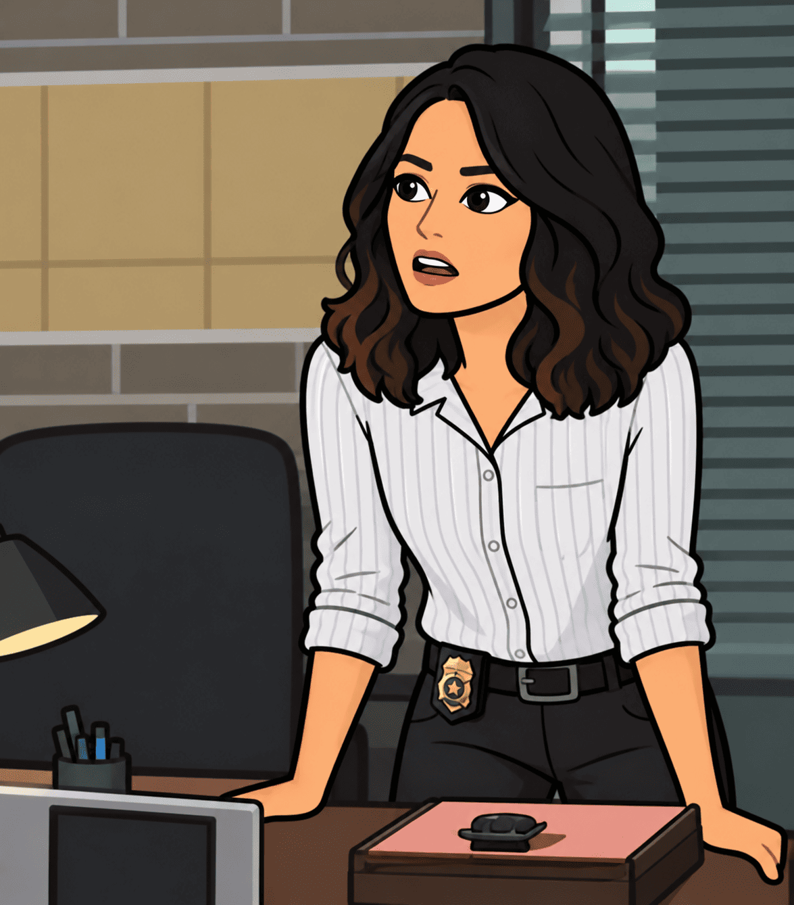
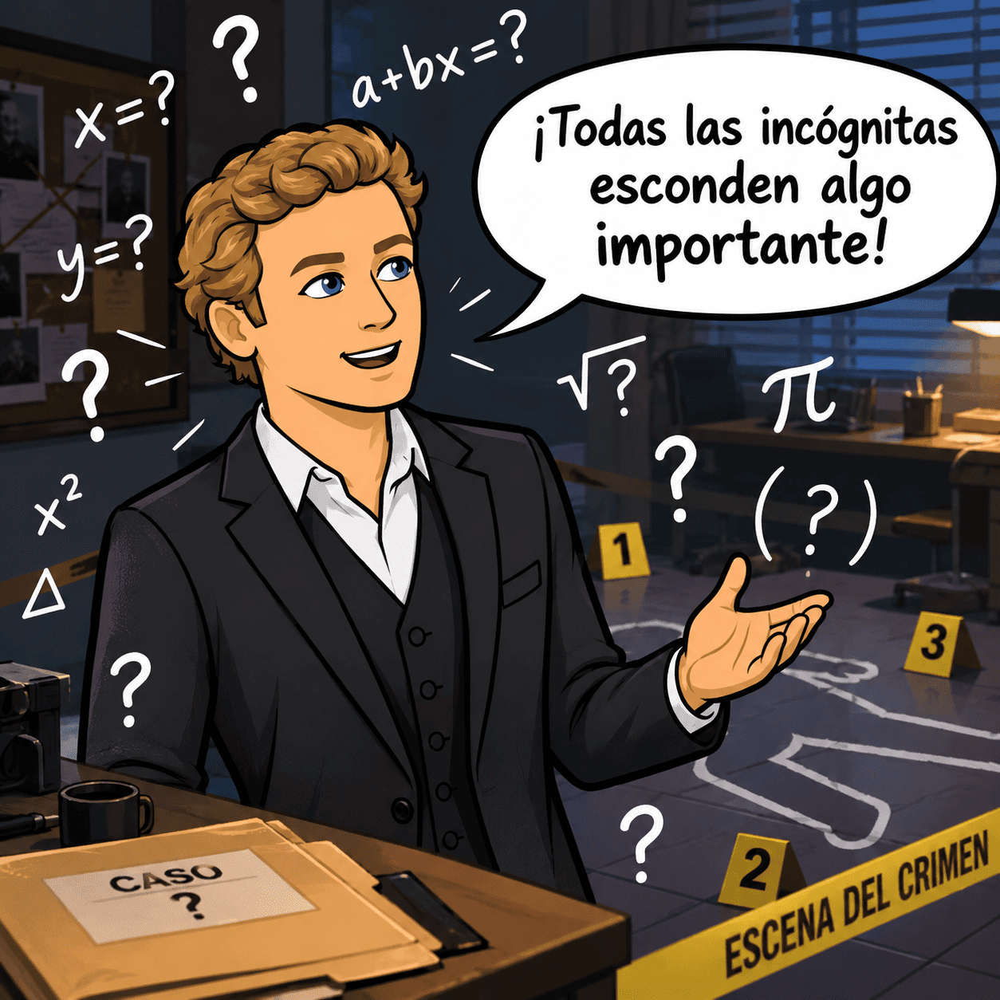
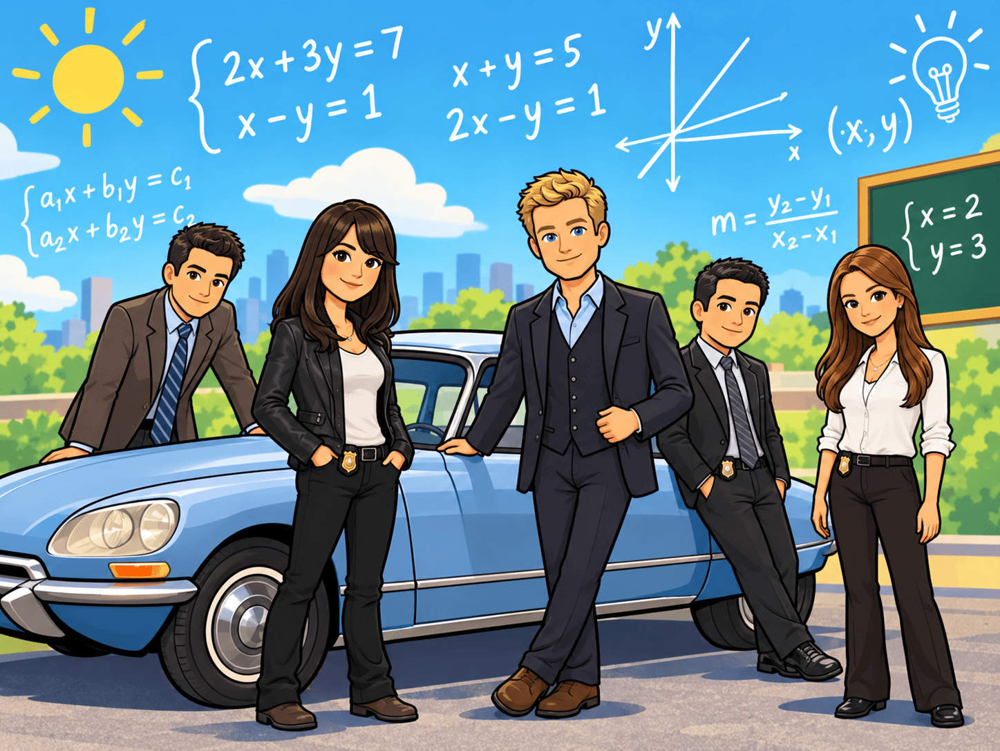

Introducción para el alumnado
Entramos en el mundo cinematográfico de la serie El mentalista...
Agente, la CBI necesita tu ayuda.
Teresa Lisbon y su equipo se enfrentan a una investigación en la que nada es lo que parece. Hay declaraciones que no encajan, cantidades desconocidas, datos aparentemente contradictorios y pistas que, por separado, parecen no tener demasiado sentido.

Sin embargo, Patrick Jane está convencido de que todas esconden algo importante: una relación que todavía nadie ha descubierto.

Tigre, tigre... comienza el juego de las incógnitas.
A partir de ahora, formarás parte del equipo de investigación. Tu misión será analizar las pistas, identificar las incógnitas, traducir la información al lenguaje algebraico y utilizar los sistemas de ecuaciones para resolver los casos. Tendrás que aprender a plantear ecuaciones, aplicar distintos métodos de resolución, detectar contradicciones y comprobar que tus conclusiones son correctas.
Pero cuidado: en una investigación, una deducción precipitada puede conducir a una pista falsa. Del mismo modo, en matemáticas no basta con encontrar un resultado; es necesario justificar cada paso y demostrar que la solución tiene sentido.
A lo largo de esta misión, superarás diferentes expedientes, pondrás a prueba tu razonamiento lógico y te enfrentarás a retos matemáticos cada vez más complejos. Desde descubrir cantidades desconocidas hasta resolver situaciones relacionadas con precios, edades, distancias o repartos, cada desafío te ayudará a desarrollar las habilidades de un auténtico investigador.
¿Serás capaz de descubrir qué se esconde detrás de cada incógnita?
La investigación comienza ahora. Analiza las pistas, conecta los datos y demuestra que la verdad también puede expresarse mediante ecuaciones.
CBI — Unidad de Investigación Criminal. Expediente abierto.
Introducción general
Una investigación llena de incógnitas
La presente situación de aprendizaje se centra en el estudio de los sistemas de ecuaciones y su aplicación a la resolución de problemas, utilizando como hilo conductor una investigación criminal inspirada en la serie El mentalista. A través de una narrativa basada en expedientes, declaraciones, pistas y retos, el alumnado asumirá el papel de un equipo de investigadores de la CBI que deberá analizar información, establecer relaciones entre datos y formular conclusiones justificadas mediante el razonamiento matemático.
La propuesta se organiza en diferentes fases que permiten avanzar progresivamente desde la activación de conocimientos previos hasta la aplicación autónoma de los aprendizajes y su posterior evaluación. En primer lugar, se plantea una situación inicial que despierta la curiosidad del alumnado y le invita a identificar incógnitas y expresar relaciones entre cantidades. A continuación, se recuperan los conocimientos relacionados con las operaciones algebraicas, las ecuaciones de primer grado, los despejes y la traducción del lenguaje cotidiano al lenguaje algebraico.
Posteriormente, el alumnado explora distintas situaciones para formular hipótesis y comprender qué es un sistema de ecuaciones, cómo se puede resolver y qué tipos de soluciones puede presentar. Sobre esta base, se estructuran los contenidos relativos a los sistemas equivalentes, las operaciones elementales, los métodos de sustitución, igualación y reducción, la resolución de sistemas con tres incógnitas y la interpretación de los resultados. Estos aprendizajes se trasladan a problemas contextualizados relacionados con situaciones cotidianas y con los expedientes de la investigación.
En la fase de aplicación, el alumnado afronta diferentes retos que le permiten demostrar sus conocimientos: la resolución individual de ejercicios, la participación en un juego matemático y la elaboración de una infografía sobre los sistemas de ecuaciones acompañada de una explicación oral. Finalmente, se realiza una evaluación de los aprendizajes y una reflexión sobre el proceso seguido, las dificultades encontradas y las estrategias utilizadas.
De este modo, la situación de aprendizaje pretende favorecer una comprensión significativa de los sistemas de ecuaciones, promoviendo el razonamiento lógico, la resolución de problemas, la comunicación matemática, la autonomía y la capacidad de argumentar y comprobar los resultados obtenidos. La ambientación narrativa convierte las matemáticas en una investigación en la que cada dato puede ser una pista y cada ecuación, una herramienta para acercarse a la solución.
El objetivo final es que el alumnado comprenda que resolver un sistema no consiste únicamente en calcular unos valores, sino en interpretar las relaciones que existen entre ellos, justificar el procedimiento seguido y determinar si las conclusiones obtenidas son coherentes con la situación planteada.
